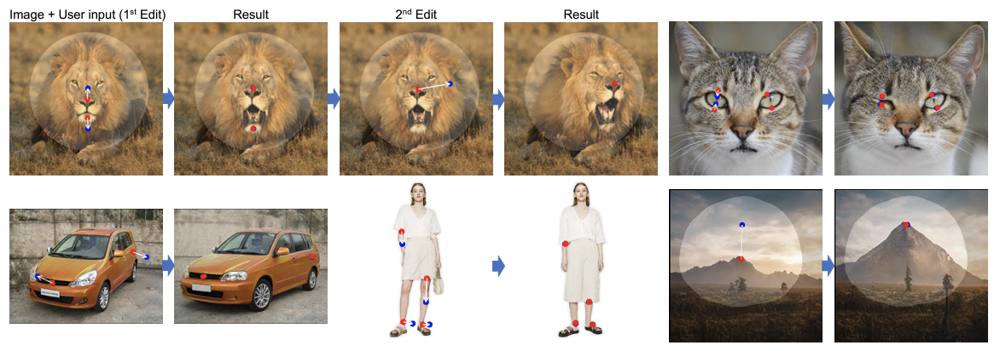

Drag Your GAN: Interactive Point-based Manipulation on the Generative Image Manifold
Drag Your GAN: 생성 이미지 조작의 인터렉티브 포인트 기반 조작

Abstract
Synthesizing visual content that meets users' needs often requires flexible and precise controllability of the pose, shape, expression, and layout of the generated objects. Existing approaches gain controllability of generative adversarial networks (GANs) via manually annotated training data or a prior 3D model, which often lack flexibility, precision, and generality.
In this work, we study a powerful yet much less explored way of controlling GANs, that is, to "drag" any points of the image to precisely reach target points in a user-interactive manner, as shown in Fig.1. To achieve this, we propose DragGAN, which consists of two main components including: 1) a feature-based motion supervision that drives the handle point to move towards the target position, and 2) a new point tracking approach that leverages the discriminative GAN features to keep localizing the position of the handle points. Through DragGAN, anyone can deform an image with precise control over where pixels go, thus manipulating the pose, shape, expression, and layout of diverse categories such as animals, cars, humans, landscapes, etc. As these manipulations are performed on the learned generative image manifold of a GAN, they tend to produce realistic outputs even for challenging scenarios such as hallucinating occluded content and deforming shapes that consistently follow the object's rigidity. Both qualitative and quantitative comparisons demonstrate the advantage of DragGAN over prior approaches in the tasks of image manipulation and point tracking. We also showcase the manipulation of real images through GAN inversion.
사용자의 요구를 충족하는 시각적 컨텐츠를 합성하려면 종종 생성된 객체의 포즈, 모양, 표현 및 레이아웃에 대한 유연하고 정확한 제어 가능성이 필요합니다. 기존 접근 방식은 수동으로 주석을 단 훈련 데이터 또는 이전 3D 모델을 통해 생성적 적대 네트워크(GAN)의 제어 가능성을 얻으며, 이는 종종 유연성, 정밀성 및 일반성이 부족합니다.
이 작업에서, 우리는 그림 1과 같이 이미지의 모든 지점을 사용자 대화식 방식으로 정확하게 목표 지점에 도달하도록 "끌기"하는 GAN을 제어하는 강력하지만 훨씬 덜 탐구된 방법을 연구합니다. 이를 위해, 우리는 DragGAN을 제안하는데, 여기에는 1) 핸들 포인트가 목표 위치로 이동하도록 구동하는 기능 기반 동작 감독과 2) 차별적 GAN 기능을 활용하여 핸들 포인트의 위치를 계속 현지화하는 새로운 포인트 추적 접근법이 포함됩니다. DragGAN을 통해 누구나 픽셀 이동 위치를 정밀하게 제어하여 이미지를 변형할 수 있으며, 동물, 자동차, 사람, 풍경 등 다양한 카테고리의 포즈, 모양, 표현, 레이아웃을 조작할 수 있습니다. 이러한 조작은 GAN의 학습된 생성 이미지 매니폴드에서 수행되기 때문에 폐쇄된 내용을 환각화하고 물체의 강성을 일관되게 따르는 모양을 변형시키는 것과 같은 도전적인 시나리오에서도 현실적인 출력을 생성하는 경향이 있습니다. 정성적 및 정량적 비교는 이미지 조작 및 포인트 추적 작업에서 이전 접근 방식에 비해 DragGAN의 이점을 보여줍니다. 우리는 또한 GAN 반전을 통한 실제 이미지의 조작을 보여줍니다.
소개 사이트 |
논문